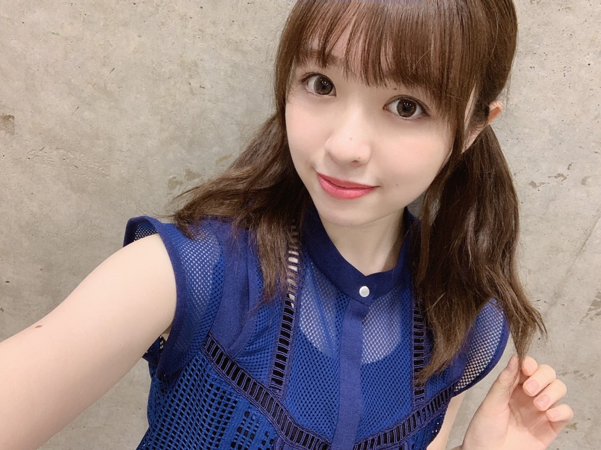

2019/0803Sat三角形

我が家では最近梅雨明けしたと同時に、
新しいフェイスタオルやバスタオルを
購入しました。
新しいバスタオルを洗って
干した後のあのふんわり香るあの柔軟剤の香り
とても良いですね〜

皆さんのお花の色やお花の種類のセンスが
毎回良過ぎる、、
会いに来て頂く事だけでも有難いのに
笑わせてくれたり、優しさ溢れる言葉を頂いたり
もう感謝しかないです、
ありがとうございます！！
1.2部

3部

4.5部

握手会の後はらじらーにお邪魔させて
頂きました。
オリラジさんと桃子ちゃん、日奈子
ありがとうございました〜
らじらーのスタッフさんの雰囲気と
オリラジさんのCMが流れてる時でも
笑わせて下さる優しさに
毎度楽しく嬉しい気持ちになります。
BUBKA9月号、出てます！
特大ポスターにもなっているそうです、、
恐縮です。
発売中です、宜しくお願い致します。
猫舌SHOWROOM、見てくださった皆様
ありがとうございました！
毎回うるさくしてしまい、申し訳ありません、、
インテックス大阪で全国握手会
伊藤理々杏ちゃんとペアです。
宜しくお願い致します！
そして全国ツアーも折り返し、次は大阪です。
メンバー皆でお待ちしております！
水分補給をしっかりとり
熱中症には十分お気をつけください！
みり愛
2019/08/03 19:30
コメント(339)
まだ夜明けで眠いけど、強がって、こっそり
暗闇の中から、エールを送ります。
暗闇の中から、エールを送ります。
みり愛ちゃんおはよう❗
やりたいこと、すぐ行動に移すって良いことだと思うよー！
確かに時と場合を考えないとならないことも多いけれど…
ちなみに僕なんか、夜お仕事終わってあそこの景色みたいなあってふいに思って、翌朝には300キロ離れた場所にいたりする(笑)
(そういうことじゃないか……)(^^;
みり愛ちゃん肩凝りなの〜？
前からなのかな？(><)
明日の握手会都合で行けないけど、みり愛ちゃん楽しい１日にしてね！
やりたいこと、すぐ行動に移すって良いことだと思うよー！
確かに時と場合を考えないとならないことも多いけれど…
ちなみに僕なんか、夜お仕事終わってあそこの景色みたいなあってふいに思って、翌朝には300キロ離れた場所にいたりする(笑)
(そういうことじゃないか……)(^^;
みり愛ちゃん肩凝りなの〜？
前からなのかな？(><)
明日の握手会都合で行けないけど、みり愛ちゃん楽しい１日にしてね！
鹿です⊂(ο･㉨･ο）⊃”くまﾃﾞｽ…
冷製パスタうまぺろんぬそうだぷーq(T▽Tq)(pT▽T)p
新制服を着た渡辺殿♡きゃわわうれぴーぽーo(￣◎￣)o ﾊﾞﾌﾞｩ♡
なみころ♪すち♡(｡･(ｪ)･人ゝ(ｪ)･｡)ｷ゛ｭｯ♪
冷製パスタうまぺろんぬそうだぷーq(T▽Tq)(pT▽T)p
新制服を着た渡辺殿♡きゃわわうれぴーぽーo(￣◎￣)o ﾊﾞﾌﾞｩ♡
なみころ♪すち♡(｡･(ｪ)･人ゝ(ｪ)･｡)ｷ゛ｭｯ♪
みり、
じゃあ今度後ろ向きで駅弁を、食べような(^_-)-
うぁーがんばるぞい(^ ^)！
じゃあ今度後ろ向きで駅弁を、食べような(^_-)-
うぁーがんばるぞい(^ ^)！
2019年8月9日
昨日、なかなか良い空の写真撮れたのでやったー、と喜んでいましたが、冷静に考えたらみり愛さんに見てもらう術はありませんでした
昨日、なかなか良い空の写真撮れたのでやったー、と喜んでいましたが、冷静に考えたらみり愛さんに見てもらう術はありませんでした
やっほー。セブンだよ(ฅ'ω'ฅ)♪
やりたいと思ったことはやった方がいいよ！
別に直す必要ないよ
やらずに後悔するより絶対やった方がいいからね
ゴルゴンゾーラオレはずっと前から好きよ
Tシャツ買いに行こうぜー！
では今日も1日楽しもうd(@^∇ﾟ)/ﾌｧｲﾄｯ♪
o(ﾟ▽＾)ﾉｼまたねぃ♪
やりたいと思ったことはやった方がいいよ！
別に直す必要ないよ
やらずに後悔するより絶対やった方がいいからね
ゴルゴンゾーラオレはずっと前から好きよ
Tシャツ買いに行こうぜー！
では今日も1日楽しもうd(@^∇ﾟ)/ﾌｧｲﾄｯ♪
o(ﾟ▽＾)ﾉｼまたねぃ♪
浴衣いいですね デコ出しの破壊力…素晴らしい
花火 一緒に観に行く妄想をして明日からまた頑張ります
忙しい中、ブログアップ ありがとう
花火 一緒に観に行く妄想をして明日からまた頑張ります
忙しい中、ブログアップ ありがとう
鹿です⊂(ο･㉨･ο）⊃”くまﾃﾞｽ…
ゆか浴衣姿の渡辺殿♡♡すち♡(｡･(ｪ)･人ゝ(ｪ)･｡)ｷ゛ｭｯ♪
おでこったん渡辺殿♡きゃわわうれぴーぽーo(￣◎￣)o ﾊﾞﾌﾞｩ♡♡
ゆか浴衣姿の渡辺殿♡♡すち♡(｡･(ｪ)･人ゝ(ｪ)･｡)ｷ゛ｭｯ♪
おでこったん渡辺殿♡きゃわわうれぴーぽーo(￣◎￣)o ﾊﾞﾌﾞｩ♡♡
みり愛あああああ
お久しぶりのコメントになってしまったorz
この日の握手会全部通してコーデ最高すぎる…
行きたかったなあ
でこ出しみり愛ちゃん見たかったです。
猫舌SHOWROOM拝見しました。
謝罪の件お気になさらず
テンション高いみり愛ちゃんの姿見えて
日々の疲れが癒されました。
ありがとう☻
生もぐだぁが聞きたい今日この頃。
みり愛ちゃんも熱中症等お身体にお気をつけて
ではまた！
この日の握手会全部通してコーデ最高すぎる…
行きたかったなあ
でこ出しみり愛ちゃん見たかったです。
猫舌SHOWROOM拝見しました。
謝罪の件お気になさらず
テンション高いみり愛ちゃんの姿見えて
日々の疲れが癒されました。
ありがとう☻
生もぐだぁが聞きたい今日この頃。
みり愛ちゃんも熱中症等お身体にお気をつけて
ではまた！
コメント失礼しまーす！
みり愛おはよー
昨日は握手会お疲れ様‼️
まだみり愛の握手券ないから、みり愛のレーンは行けなかった…
でも24枚目のシングルはみり愛の握手券取れたから、今から握手するの楽しみだ！
23枚目も日奈子のレーン中心に参加してたんだけど、みり愛のレーンは日奈子の隣だったから、いつも少しみり愛が見えていて、握手するイメージはバッチリです！笑
今日はこれから大学時代の友達とBBQ行ってきまーす！
またコメントするねー
みり愛おはよー
昨日は握手会お疲れ様‼️
まだみり愛の握手券ないから、みり愛のレーンは行けなかった…
でも24枚目のシングルはみり愛の握手券取れたから、今から握手するの楽しみだ！
23枚目も日奈子のレーン中心に参加してたんだけど、みり愛のレーンは日奈子の隣だったから、いつも少しみり愛が見えていて、握手するイメージはバッチリです！笑
今日はこれから大学時代の友達とBBQ行ってきまーす！
またコメントするねー
みり愛、おはよう
今日も暑くなりそうだね〜
こんなに太陽燦々と輝いてるのに
みり愛は色白で綺麗だよね
見ていてうっとりするくらい美しい...
日焼けとかしないのかな〜
色の白いは七難かくすっていうけど
みり愛は可愛い上に色白だから
素晴らしいとしかいいようがないよ
今日も暑くなりそうだね〜
こんなに太陽燦々と輝いてるのに
みり愛は色白で綺麗だよね
見ていてうっとりするくらい美しい...
日焼けとかしないのかな〜
色の白いは七難かくすっていうけど
みり愛は可愛い上に色白だから
素晴らしいとしかいいようがないよ
はーよっ♪みり(^ ^)！
らぶの為、シャワーで綺麗にしてきた

にしてもあっちぃよなぁ…こんなん外に出たらすぐに汗だくだ！笑。ね(^_-)-
それからちゃんと爪も切った(^ ^)
という報告♪(^_-)-
らぶの為、シャワーで綺麗にしてきた
にしてもあっちぃよなぁ…こんなん外に出たらすぐに汗だくだ！笑。ね(^_-)-
それからちゃんと爪も切った
という報告♪(^_-)-
みりさぁ、シチューの次にはの唐揚げが入ったお弁当を食べたいんだけど(気が早い)、みりは？駅弁以外で何か食べたいものはあんの？？お刺身が好きだからやっぱり生ものが良いとかかな？？僕は揚げ物が大好きだから、この暑さでも相変わらず揚げ物やお肉なんかが食べたいんだよね。けどたまには生ものも良いかなって。食後のシメも運動の後もアイスが食べたい、、、(勿論チョコミント)
みり愛あああああ
みり愛ちゃん、昨日の握手会、お疲れ様！
そして、ありがとう！！
久し振りにみり愛ちゃんに会えて、すごく嬉しかったよ！！
やっぱみり愛ちゃんとお話しするのすごく楽しいし、みり愛ちゃん、めっちゃ可愛かったな
あと、昨日は俺の誕生日だったから、直接お祝いもしてもらえて、すごく嬉しかった！
ありがとう！！
名札を見て、改めて名前を付けておめでとうって言ってくれたの、すっごく嬉しかったし、みり愛ちゃんのやさしさを感じて、みり愛ちゃんへの愛がより強くなったよ！
あと、昨日も言ったように、中々会いに行かなかったりするけど、みり愛ちゃんのことはずっと見てるし、ずっと応援してるからね！
実際、23枚目の期間、みり愛ちゃんがたくさんの音楽番組に出てたけど、自然とみり愛ちゃんばかりを目で追っちゃったよ！
やっぱ、みり愛ちゃんのパフォーマンスって、すごく惹かれるし、本当に素敵だと思う！！
元々、みり愛ちゃんを推すようになったきっかけは、北海道アンダラでの、人生を考えたくなるのパフォーマンスだからね！
俺にとって、みり愛ちゃんのパフォーマンスっていうのは、すごく大切なものだし、大好きなものだからさ！！
あと、猫舌で宇宙兄弟でイチャイチャしてるところも大好きだし、モバメを沢山送ってくれて、可愛い写真やお裾分けシリーズとかも全部嬉しいよ！
直接は伝える機会があまりなくても、ずっと想ってるし、ブログのコメントとかでは伝えていくからね！！
本当に昨日はありがとう！
みり愛ちゃんとお話しできて、直接お祝いもしてもらって、本当に幸せな誕生日になった！！
みり愛ちゃん、大好き
そして、ありがとう！！
久し振りにみり愛ちゃんに会えて、すごく嬉しかったよ！！
やっぱみり愛ちゃんとお話しするのすごく楽しいし、みり愛ちゃん、めっちゃ可愛かったな
あと、昨日は俺の誕生日だったから、直接お祝いもしてもらえて、すごく嬉しかった！
ありがとう！！
名札を見て、改めて名前を付けておめでとうって言ってくれたの、すっごく嬉しかったし、みり愛ちゃんのやさしさを感じて、みり愛ちゃんへの愛がより強くなったよ！
あと、昨日も言ったように、中々会いに行かなかったりするけど、みり愛ちゃんのことはずっと見てるし、ずっと応援してるからね！
実際、23枚目の期間、みり愛ちゃんがたくさんの音楽番組に出てたけど、自然とみり愛ちゃんばかりを目で追っちゃったよ！
やっぱ、みり愛ちゃんのパフォーマンスって、すごく惹かれるし、本当に素敵だと思う！！
元々、みり愛ちゃんを推すようになったきっかけは、北海道アンダラでの、人生を考えたくなるのパフォーマンスだからね！
俺にとって、みり愛ちゃんのパフォーマンスっていうのは、すごく大切なものだし、大好きなものだからさ！！
あと、猫舌で宇宙兄弟でイチャイチャしてるところも大好きだし、モバメを沢山送ってくれて、可愛い写真やお裾分けシリーズとかも全部嬉しいよ！
直接は伝える機会があまりなくても、ずっと想ってるし、ブログのコメントとかでは伝えていくからね！！
本当に昨日はありがとう！
みり愛ちゃんとお話しできて、直接お祝いもしてもらって、本当に幸せな誕生日になった！！
みり愛ちゃん、大好き
コメント失礼しまーす！
みり愛今日も1日お疲れ様‼️
今日は友達とBBQしてきたよ！
めっちゃ楽しかった！
でも暑すぎて溶けそうだった笑
みり愛は朝からお仕事だったのかな？
日奈子が今日は楽しみな撮影って言ってたから、もしかして宇宙兄弟で撮影とかだったりするのかな？？
そうだと嬉しいな〜
またコメントするねー
みり愛今日も1日お疲れ様‼️
今日は友達とBBQしてきたよ！
めっちゃ楽しかった！
でも暑すぎて溶けそうだった笑
みり愛は朝からお仕事だったのかな？
日奈子が今日は楽しみな撮影って言ってたから、もしかして宇宙兄弟で撮影とかだったりするのかな？？
そうだと嬉しいな〜
またコメントするねー
みり愛ちゃんおはよう❗
昨日はお盆休みにも関わらず自分は仕事が入ってたので働いてた〜(涙)
でもお仕事の行き帰りに海や山の行楽地に向かう楽しそうな子どもや家族連れをみてたら、なんか
心が和んだよ(^^)
ということで、昨日の全ツ神宮の一般チケット争奪戦には参加出来なかったんだけど、代わりに知り合いのヲタさんが連番でとってくれたので、
3日間とも行けることになったよ〜(^^)
地方公演１度も行けないぶん、ここでしっかりみり愛ちゃんのダンスを見つけるぞ！
昨日はお盆休みにも関わらず自分は仕事が入ってたので働いてた〜(涙)
でもお仕事の行き帰りに海や山の行楽地に向かう楽しそうな子どもや家族連れをみてたら、なんか
心が和んだよ(^^)
ということで、昨日の全ツ神宮の一般チケット争奪戦には参加出来なかったんだけど、代わりに知り合いのヲタさんが連番でとってくれたので、
3日間とも行けることになったよ〜(^^)
地方公演１度も行けないぶん、ここでしっかりみり愛ちゃんのダンスを見つけるぞ！
BUBUKAを読みました！
イメージに悩み万理華さんや生駒さんへの相談。
特に万理華さんはアイドルと趣味の間に悩み
試行錯誤して開花されていきましたが、
そのギャップを分かりやすく表現されたのが
”はじまりか”と”トイ”だったのかと思うと、
内容がスッと入ってきました。
今は自分なり答え見つけて”OVERTURE”などでたまに自分を出したり、
そして”今が一番楽しい”という言葉が聞けただけで嬉しいですね！
大阪2日間、参戦しますので楽しみにしています！
天候の変化が激しい週なので体調にお気をつけて！
イメージに悩み万理華さんや生駒さんへの相談。
特に万理華さんはアイドルと趣味の間に悩み
試行錯誤して開花されていきましたが、
そのギャップを分かりやすく表現されたのが
”はじまりか”と”トイ”だったのかと思うと、
内容がスッと入ってきました。
今は自分なり答え見つけて”OVERTURE”などでたまに自分を出したり、
そして”今が一番楽しい”という言葉が聞けただけで嬉しいですね！
大阪2日間、参戦しますので楽しみにしています！
天候の変化が激しい週なので体調にお気をつけて！
チャァオ～～!☆彡
おっふぅ～❕❤️❤️❤️❤️❤️照
みりちゃん、こんにちは～～～⤴️⤴️❕❤️❤️❤️❤️❤️笑顔
毎日暑いけど～～～～⤴️⤴️
お元気ですかぁ～～～⤴️⤴️❕❔❤️❤️❤️❤️❤️笑顔
最近、みりちゃんんん～～～んん❕・・・
めっちゃ綺麗だよねぇ～～～⤴️⤴️❕❤️❤️❤️❤️❤️笑顔
素敵だよぉ～～～～⤴️⤴️❕❤️❤️❤️❤️❤️笑顔
ブログ更新❕・・・
ゆっくり待っているねぇ～～～⤴️⤴️❕❤️❤️❤️❤️❤️笑顔
それでは、大好きぃみりちゃん❕笑顔・・・
お仕事楽しく頑張ってねぇ～～～⤴️⤴️❕❤️❤️❤️❤️❤️笑顔
またねぇ～～⤴️⤴️❕❤️❤️❤️❤️❤️笑顔
☆大人しい、おすまし！より☆彡
みり愛やほ〜(^ ^)
土曜日は握手会ありがとう！もうね、会いたすぎたのに券取れなすぎて…ほんとにみり愛の人気すごい上がってる証拠だよね！前日少ない(>_<)って思ってた、、でもあえて良かった〜！その分24枚目はたくさんとったよ！だから楽しみ〜
みり愛も1日暑かったろうにお疲れさま！(>_<)
髪の毛触られたのはまぁびっくりしたよ…笑 やっぱみり愛の握手って本当に楽しいなあ！て思ったよ(^ ^)あとさ24日の全握も頑張って朝早起きして、、女性エリアの最前狙おうと思ってるん(^ ^)
だって！みり愛の選抜曲だもん！だってAm I lovingもみり愛の見たいし〜もうねみり愛のためにならなんでも出来る気がする(^ ^)← まぁとりあえず頑張ります。。笑
そうだ！神宮もね！一般取れたんだよ〜(>_<)2日間も！！
嬉しい〜みり愛の神宮のライブ見るのが本当に嬉しい〜
今回の一般先着なのよ。だから先着だから、この目で完売って文字見るまでは諦めないぞ！って気持ちでずっと画面とにらめっこしてた、、7時間ずっとだよ？笑 途中で画面酔いしそうになった笑 でも諦めたくなかったんだよね。。普通に考えたらあほ、、笑 ありえないよね〜笑 今回の7時間で取れたっていうのはそれだけ乃木坂っていうグループが本当に大きな存在になってきてるんだなって感じました、、笑
それでも2日間も取れたのは嬉しいよ(>_<) 1日目と2日目！
みり愛のサイリウムカラー振るからね〜！(♡˙︶˙♡)みり愛も楽しんでね(♡˙︶˙♡)そうだー握手会でまたお手紙出しといたよ！まぁ暇があったらお手紙見に行ってね笑
24日また会えるの楽しみにしてるぞおお( ' ' )♡
だいすきᕱ⑅ᕱ♥
まこぺんより
土曜日は握手会ありがとう！もうね、会いたすぎたのに券取れなすぎて…ほんとにみり愛の人気すごい上がってる証拠だよね！前日少ない(>_<)って思ってた、、でもあえて良かった〜！その分24枚目はたくさんとったよ！だから楽しみ〜
みり愛も1日暑かったろうにお疲れさま！(>_<)
髪の毛触られたのはまぁびっくりしたよ…笑 やっぱみり愛の握手って本当に楽しいなあ！て思ったよ(^ ^)あとさ24日の全握も頑張って朝早起きして、、女性エリアの最前狙おうと思ってるん(^ ^)
だって！みり愛の選抜曲だもん！だってAm I lovingもみり愛の見たいし〜もうねみり愛のためにならなんでも出来る気がする(^ ^)← まぁとりあえず頑張ります。。笑
そうだ！神宮もね！一般取れたんだよ〜(>_<)2日間も！！
嬉しい〜みり愛の神宮のライブ見るのが本当に嬉しい〜
今回の一般先着なのよ。だから先着だから、この目で完売って文字見るまでは諦めないぞ！って気持ちでずっと画面とにらめっこしてた、、7時間ずっとだよ？笑 途中で画面酔いしそうになった笑 でも諦めたくなかったんだよね。。普通に考えたらあほ、、笑 ありえないよね〜笑 今回の7時間で取れたっていうのはそれだけ乃木坂っていうグループが本当に大きな存在になってきてるんだなって感じました、、笑
それでも2日間も取れたのは嬉しいよ(>_<) 1日目と2日目！
みり愛のサイリウムカラー振るからね〜！(♡˙︶˙♡)みり愛も楽しんでね(♡˙︶˙♡)そうだー握手会でまたお手紙出しといたよ！まぁ暇があったらお手紙見に行ってね笑
24日また会えるの楽しみにしてるぞおお( ' ' )♡
だいすきᕱ⑅ᕱ♥
まこぺんより
みり愛〜♪
こんばんはっ！
海外でのお仕事
弾丸スケジュールでこなして
きましたっ！
くたびれたけど
充実感いっぱい
日本はいいよね、やっぱり
でも暑いね！すごく暑い
うわっ！台風きてるじゃん！
しかも超大型て、、、
東に行きたかったのに
西へ行ってしまった
北へ行きたかったのに
南へ行ってしまった
大丈夫、ちゃんと最後には
たどり着けるから
だって地球は丸いから
遠回りすればするほど
想い出が増えるだけ
いいんだよ、いいんだよ
それでいいんだよ
だから、安心して
いってらっしゃい
こんばんはっ！
海外でのお仕事
弾丸スケジュールでこなして
きましたっ！
くたびれたけど
充実感いっぱい
日本はいいよね、やっぱり
でも暑いね！すごく暑い
うわっ！台風きてるじゃん！
しかも超大型て、、、
東に行きたかったのに
西へ行ってしまった
北へ行きたかったのに
南へ行ってしまった
大丈夫、ちゃんと最後には
たどり着けるから
だって地球は丸いから
遠回りすればするほど
想い出が増えるだけ
いいんだよ、いいんだよ
それでいいんだよ
だから、安心して
いってらっしゃい
みり愛、こんばんは。。。。。
☆ 10日の横浜個握 最後の二部に伺いました、、、
※というより、関東の全個握の５部に通っています、、、
みり愛と握手したら、帰宅するパターン
みり愛のホルダーに、5月、6月のみり愛の写真
を入れて伺いました、、、
４部 1648 「いつも、５部だけだけど、
24th 11月24日は全５部取ったよ。
もちろん、次の５部も来るよ。」
⇒ 『ありがとう !!』
５部 1936 「Bubka のグラビア 見たよ、、、
子供から大人への姿、きっと、写真集出せるよ。」
⇒ 『ありがとう !! 需要が ?』
⇒ 「 100部買う !!
まだ、あどけなさがあっていい。」
紫地に白い模様のブラウスに、黒いパンタロン(?)
とっても、かわいかったよ、、、
朝から、各部 7コマ、全部で 35コマ目、
みり愛に力をもらって、無事に帰宅しました、、、
暑い毎日ですが、
くれぐれも身体を大切にしてくださいね。。。。。
☆ 10日の横浜個握 最後の二部に伺いました、、、
※というより、関東の全個握の５部に通っています、、、
みり愛と握手したら、帰宅するパターン
みり愛のホルダーに、5月、6月のみり愛の写真
を入れて伺いました、、、
４部 1648 「いつも、５部だけだけど、
24th 11月24日は全５部取ったよ。
もちろん、次の５部も来るよ。」
⇒ 『ありがとう !!』
５部 1936 「Bubka のグラビア 見たよ、、、
子供から大人への姿、きっと、写真集出せるよ。」
⇒ 『ありがとう !! 需要が ?』
⇒ 「 100部買う !!
まだ、あどけなさがあっていい。」
紫地に白い模様のブラウスに、黒いパンタロン(?)
とっても、かわいかったよ、、、
朝から、各部 7コマ、全部で 35コマ目、
みり愛に力をもらって、無事に帰宅しました、、、
暑い毎日ですが、
くれぐれも身体を大切にしてくださいね。。。。。
コメント失礼しまーす！
みり愛今日も1日お疲れ様‼️
今日もまた友達と遊びに出かけてたんだけど、この3連休は遊び過ぎて疲れました笑
友達は夏休みの人が多いから明日からも休みなんだよなー
俺はもう夏休み取り終わっちゃってるから、明日から通常通り仕事なんだけどね
みり愛は今日は親戚で集まってるんだね！
俺も最近はそういう機会がなくなっちゃったなー
今日は早めに寝て、明日からの仕事に備えます
またコメントするねー
みり愛今日も1日お疲れ様‼️
今日もまた友達と遊びに出かけてたんだけど、この3連休は遊び過ぎて疲れました笑
友達は夏休みの人が多いから明日からも休みなんだよなー
俺はもう夏休み取り終わっちゃってるから、明日から通常通り仕事なんだけどね
みり愛は今日は親戚で集まってるんだね！
俺も最近はそういう機会がなくなっちゃったなー
今日は早めに寝て、明日からの仕事に備えます
またコメントするねー
こんばんは〜。
今日は連休中で、本当は休みなんだけど、
少し、仕事してきました。
それから、洗車、掃除ですね。
あと、台風情報確認ですね。
頼むから、もってくれ〜って感じです。
いよいよ明後日だよー、大阪ライブ！
すごい楽しみです。
いっぱい応援しますねー。
今日は連休中で、本当は休みなんだけど、
少し、仕事してきました。
それから、洗車、掃除ですね。
あと、台風情報確認ですね。
頼むから、もってくれ〜って感じです。
いよいよ明後日だよー、大阪ライブ！
すごい楽しみです。
いっぱい応援しますねー。
こんにちは❗何時もモバイルメール読んでるよ～❗みり愛ちゃん巨人ファンなんだぁ。実はマッチャンはヤクルトスワローズファンで有ります(今年は散々たる結果)。昨日は東京ドームに観戦してたの？東京ドームには大体行ってるんだね。因みに神宮球場には行った事有る？神宮は全国ツアーだけかな？神宮で見る野球も良いよ～❗。
教えて欲しい事が有るんだけど、みり愛ちゃんからの質問形式のメールで返信する際はどうすれば良いのか教えて下さい。
教えて欲しい事が有るんだけど、みり愛ちゃんからの質問形式のメールで返信する際はどうすれば良いのか教えて下さい。
ブログ更新ありがとう！
全ツに握手会にやること多くて大変だけど頑張ってな！
全ツに握手会にやること多くて大変だけど頑張ってな！
こんにちは！
今日も暑い中お疲れ様！お互い暑さで溶けないように、頑張ろう！笑
最近、カメラ活動や写真撮影とかしてる？
もし差し支えなければ、ブログでもモバメでも、みり愛ちゃんのカメラや写真のお話聞きたい！
握手会でもその話題で話してもいいかな？
俺も写真好きで、街歩きしながら撮るのが好きなんだ！
俺も巨人ファンで、10年くらい前によくドーム行ってたんだ！阿部選手はそのときはキャッチャーでクリーンナップだった
今も昔も変わらない魅力があるよね！
またコメントするよ！
今日も暑い中お疲れ様！お互い暑さで溶けないように、頑張ろう！笑
最近、カメラ活動や写真撮影とかしてる？
もし差し支えなければ、ブログでもモバメでも、みり愛ちゃんのカメラや写真のお話聞きたい！
握手会でもその話題で話してもいいかな？
俺も写真好きで、街歩きしながら撮るのが好きなんだ！
俺も巨人ファンで、10年くらい前によくドーム行ってたんだ！阿部選手はそのときはキャッチャーでクリーンナップだった
今も昔も変わらない魅力があるよね！
またコメントするよ！
鹿です⊂(ο･㉨･ο）⊃”くまﾃﾞｽ…
読売巨人軍♡僕も応援してまいりまふふふ(o≧▽ﾟ)oニパッ
タオルナイス[岩蔭|](ｴ)￣)観戦渡辺殿よきよきピーナッツでばいころまるロンo(^-^o)(o^-^)oロンo(^-^o)(o^-^)oロン
読売巨人軍♡僕も応援してまいりまふふふ(o≧▽ﾟ)oニパッ
タオルナイス[岩蔭|](ｴ)￣)観戦渡辺殿よきよきピーナッツでばいころまるロンo(^-^o)(o^-^)oロンo(^-^o)(o^-^)oロン
みり愛ちゃんおはよう❗
ジャイアンツ、またDeNA、カープを引き離しにかかったね！
女神みり愛のおかげかな(^^)？
打線は良いので、投手陣もどんどん建て直してくるといいね！
慎之助も相変わらず元気で頼もしい〜！
台風の行方気になるけど、みり愛ちゃん、京セラドームライブ頑張ってね！
ジャイアンツ、またDeNA、カープを引き離しにかかったね！
女神みり愛のおかげかな(^^)？
打線は良いので、投手陣もどんどん建て直してくるといいね！
慎之助も相変わらず元気で頼もしい〜！
台風の行方気になるけど、みり愛ちゃん、京セラドームライブ頑張ってね！
みり愛
おはよう
握手会で着てたグリーンの浴衣姿が
とっても可愛くて素敵でした！
みり愛は可愛いから
何着ても似合うんだけど、特にね
明日から大阪ライブ
サイリウム持ってしっかり応援するので
ライブ会場で見つけてね！
おはよう
握手会で着てたグリーンの浴衣姿が
とっても可愛くて素敵でした！
みり愛は可愛いから
何着ても似合うんだけど、特にね
明日から大阪ライブ
サイリウム持ってしっかり応援するので
ライブ会場で見つけてね！
みり愛…
好きだよ♡大好きだ♡愛してる♡
のでそのまま…
あ〜、みり愛…
可愛いよ
可愛過ぎだ
世界で一番可愛い
みり愛、みり愛、みり愛…
うおおおおお(>_<)！
みり愛あああああ
好きだ好きだ好きだ好きだ好きだ好きだ好きだ好きだ好きだ好きだ好きだ好きだ好きだ好きだ好きだ好きだ好きだっ…(>_<)！
みり愛あああああ
みり愛みり愛みり愛みり愛みり愛みり愛みり愛みり愛みり愛みり愛みり愛みり愛みり愛みり愛みり愛みり愛みり愛っ…(>_<)！
みり愛あああああ
愛してる？
愛してるー！愛してるよー(^ ^)！
みり愛あああああっっ
ううううう(>_<) ぎゅっ
ぎゅっ
あああああ(>_<) ぎゅううううう
ぎゅううううう
そのままみり愛っ…(>_<)！(主だから◎)
勿論、みり愛限定のフルコースも忘れずに♪(^_-)-
ホント可愛い、好きも好きで大好きだから、愛して愛して愛しても、愛してやまないんだぞ(^ ^)！
みり愛(^ ^)！
アイシテル(^_-)-
好きだよ♡大好きだ♡愛してる♡
のでそのまま…
あ〜、みり愛…
可愛いよ
可愛過ぎだ
世界で一番可愛い
みり愛、みり愛、みり愛…
うおおおおお(>_<)！
みり愛あああああ
好きだ好きだ好きだ好きだ好きだ好きだ好きだ好きだ好きだ好きだ好きだ好きだ好きだ好きだ好きだ好きだ好きだっ…(>_<)！
みり愛あああああ
みり愛みり愛みり愛みり愛みり愛みり愛みり愛みり愛みり愛みり愛みり愛みり愛みり愛みり愛みり愛みり愛みり愛っ…(>_<)！
みり愛あああああ
愛してる？
愛してるー！愛してるよー(^ ^)！
みり愛あああああっっ
ううううう(>_<)
あああああ(>_<)
そのままみり愛っ…(>_<)！(主だから◎)
勿論、みり愛限定のフルコースも忘れずに♪(^_-)-
ホント可愛い、好きも好きで大好きだから、愛して愛して愛しても、愛してやまないんだぞ(^ ^)！
みり愛
アイシテル
みり愛あああああ
こんにちは
台風の進路ヤバいね
ライブには支障ないのかな？
京セラは屋内だけど
行き帰りのこともあるし、
決行？中止？
もし中止にするなら
早めに教えて欲しいな
台風の進路ヤバいね
ライブには支障ないのかな？
京セラは屋内だけど
行き帰りのこともあるし、
決行？中止？
もし中止にするなら
早めに教えて欲しいな
こんばんは。セブンだよ(ฅ'ω'ฅ)♪
今日も1日おつかれさま
握手会楽しかったね
いつもありがとう(^-^)
みり愛との握手は毎回めっちゃ楽しいよ
また遊んでねーヾ(o´∀｀o)ﾉﾜｧｰｨ♪
明日、京セラドーム行くよー
見つけてくれたらセブンちゃん喜びます(^-^)
では、明日ライブ楽しもうd(@^∇ﾟ)/ﾌｧｲﾄｯ♪
o(ﾟ▽＾)ﾉｼまたねぃ♪
今日も1日おつかれさま
握手会楽しかったね
いつもありがとう(^-^)
みり愛との握手は毎回めっちゃ楽しいよ
また遊んでねーヾ(o´∀｀o)ﾉﾜｧｰｨ♪
明日、京セラドーム行くよー
見つけてくれたらセブンちゃん喜びます(^-^)
では、明日ライブ楽しもうd(@^∇ﾟ)/ﾌｧｲﾄｯ♪
o(ﾟ▽＾)ﾉｼまたねぃ♪
コメント失礼しまーす！
みり愛今日も1日お疲れ様‼️
今日はお盆だけど、通常通り仕事だったー
夏休みは2週間くらい前に取っちゃったから、今夏休みの人が羨ましい！
今日の朝は電車すごく空いてるかなと思ったけど、意外と混んででびっくり
大阪のライブが近づいてるね！
仕事があって行けないけど、頑張ってね‼️
天気が心配だね
無事に終わることを祈ってる！
またコメントするねー
みり愛今日も1日お疲れ様‼️
今日はお盆だけど、通常通り仕事だったー
夏休みは2週間くらい前に取っちゃったから、今夏休みの人が羨ましい！
今日の朝は電車すごく空いてるかなと思ったけど、意外と混んででびっくり
大阪のライブが近づいてるね！
仕事があって行けないけど、頑張ってね‼️
天気が心配だね
無事に終わることを祈ってる！
またコメントするねー
大阪の全握、行きました！本当に楽しくて可愛くてやばかったです笑楽しい時間をありがとうございました！！
あいしてるから


可愛すぎた。
先程メール来てましたが肩凝り酷いみたいですね
よかったら塩まくら試してみて。
アマゾンとかで売ってる。そんな高くないよ
私はかなり効いてます。
では、来週14.15大阪ライブ楽しみにしてます。